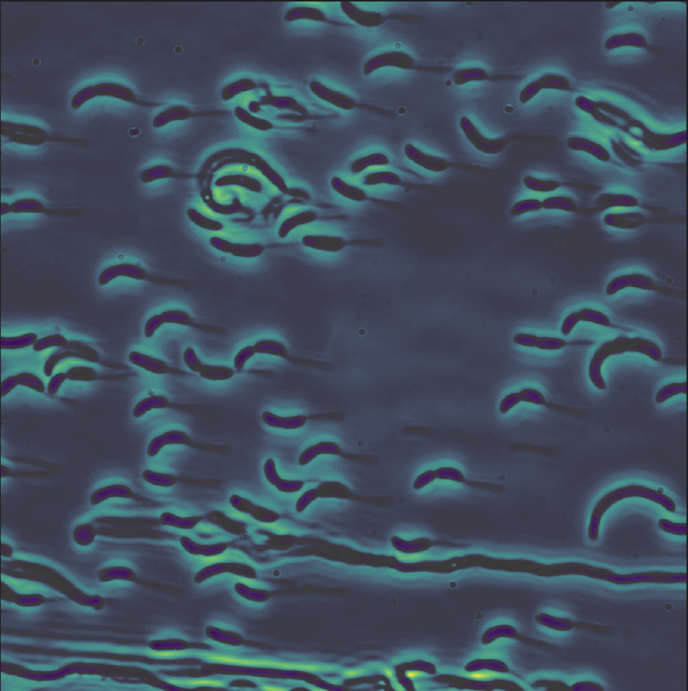
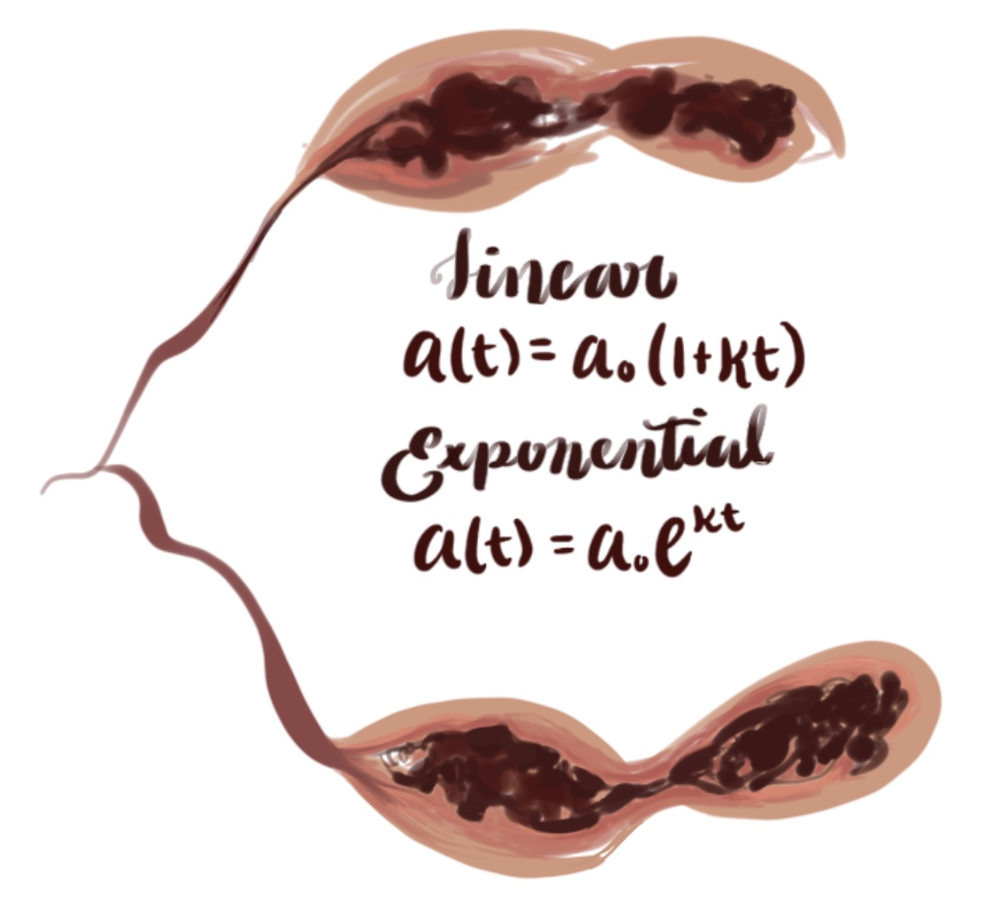
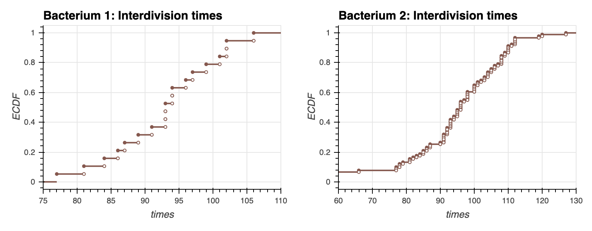
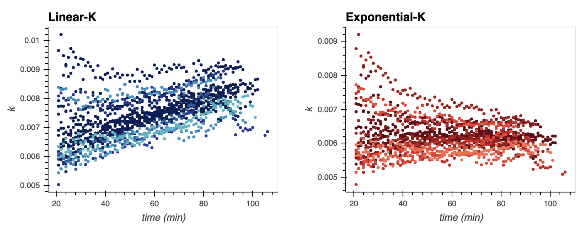
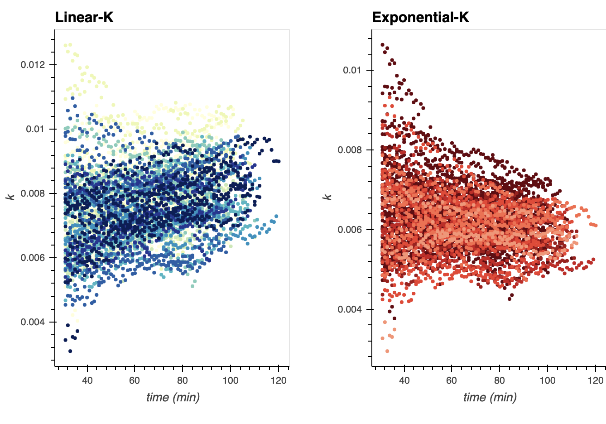
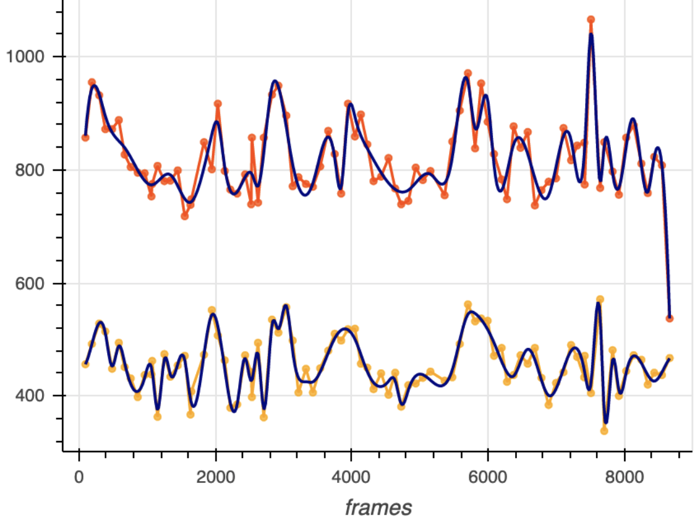
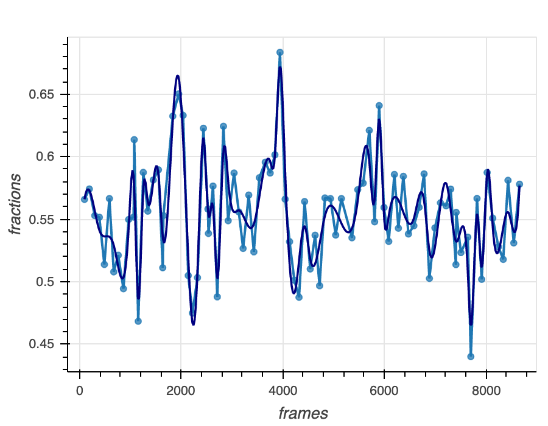

<!doctype html>
<html>
<head>
<style>
    a:link {
        text-decoration: underline;
    }
    a:visited {
        text-decoration: none;
    }
    
    a:hover {
        text-decoration: underline;
    }
    a:hover {
        border-bottom: double 0.5px;
    }
    a:active {
        text-decoration: underline;
    }

</style>
    
  <title>
      Cauliflower Research | RF, TM, ES

  </title>

  <meta name="viewport" content="width=device-width, initial-scale=1">
  <meta charset="utf-8">
  <link rel="stylesheet" href="https://gchure.github.io/assets/css/main.css">
  <link rel="stylesheet" href="https://gchure.github.io/assets/css/syntax.css">
  <!-- Use Atom -->
  <link type="application/atom+xml" rel="alternate" href="https://gchure.github.io/feed.xml" title="Griffin Chure" />

  <link href="https://fonts.googleapis.com/css?family=Bellefair|Cormorant+Infant|&display=swap" rel="stylesheet">
  <link rel="stylesheet" href="https://fonts.googleapis.com/css?family=Cardo|Source+Code+Pro">
  <link rel="stylesheet" href="https://cdnjs.cloudflare.com/ajax/libs/font-awesome/4.6.3/css/font-awesome.min.css">

  <script type="text/javascript" async
    src="https://cdnjs.cloudflare.com/ajax/libs/mathjax/2.7.5/MathJax.js?config=TeX-MML-AM_CHTML">
    </script>


  <!-- Google Analytics -->
  <script>
  (function(i,s,o,g,r,a,m){i['GoogleAnalyticsObject']=r;i[r]=i[r]||function(){
  (i[r].q=i[r].q||[]).push(arguments)},i[r].l=1*new Date();a=s.createElement(o),
  m=s.getElementsByTagName(o)[0];a.async=1;a.src=g;m.parentNode.insertBefore(a,m)
  })(window,document,'script','//www.google-analytics.com/analytics.js','ga');

  ga('create', 'UA-109526846-1', 'auto');
  ga('send', 'pageview');
</script>

    
<!-- Use Jekyll SEO plugin -->
<!-- Begin Jekyll SEO tag v2.5.0 -->
    <meta name="generator" content="Jekyll v3.8.5" />
    <meta property="og:title" content="Research" />
    <meta property="og:locale" content="en_US" />
    <meta name="description" content="Below is a list of my past, current, and future research projects. Where available, links have been provided to the publisher, paper website, and GitHub repository. If you cannot access one of the papers, let me know." />
    <meta property="og:description" content="Below is a list of my past, current, and future research projects. Where available, links have been provided to the publisher, paper website, and GitHub repository. If you cannot access one of the papers, let me know." />
  
	<meta name="description" content="Information about the project, website, and links to the paper and SI">
	<meta http-equiv="X-UA-Compatible" content="IE=edge">
	<meta name="viewport" content="width=device-width, initial-scale=1, maximum-scale=1">
	<meta property="og:image" content="">
	<link rel="shortcut icon" href="/assets/img/favicon/favicon.ico" type="image/x-icon">
	<link rel="apple-touch-icon" href="/assets/img/favicon/apple-touch-icon.png">
	<link rel="apple-touch-icon" sizes="72x72" href="/assets/img/favicon/apple-touch-icon-72x72.png">
	<link rel="apple-touch-icon" sizes="144x144" href="/assets/img/favicon/apple-touch-icon-144x144.png">
	<!-- Chrome, Firefox OS and Opera -->
	<meta name="theme-color" content="#263959">
	<!-- Windows Phone -->
	<meta name="msapplication-navbutton-color" content="#263959">
	<!-- iOS Safari -->
	<meta name="apple-mobile-web-app-status-bar-style" content="#263959">
	<!-- Google Fonts -->
	<link href="https://fonts.googleapis.com/css?family=PT+Serif:400,700" rel="stylesheet">
	<link href="https://fonts.googleapis.com/css?family=Lato:300,400,700" rel="stylesheet">
	<!-- Font Awesome -->
	<link rel="stylesheet" href="/assets/fonts/font-awesome/css/font-awesome.min.css">
	<!-- Styles -->
	<link rel="stylesheet" href="/assets/css/main.css">
</head>
<body>
  <div class="wrapper">
      <section class="contact">
    <aside class="sidebar">
  <header>
    <div class="about">
      <div class="cover-author-image">
      </div>
      <div class="author-name"></div>
      <div class="sidebar-links">
      <hr>
      
  <footer>

  </footer>
</aside>

<!--<div class="content-box clearfix">-->
  <article class="article-page">
  <div class="page-content">
    
    <div class="page-cover-image">
      <figure>
          <figcaption style="background-color: rgb(0, 0, 0, 0.5);
          font-weight:bold; text-align: center;">BEBI103 (Fall 2019)</figcaption>
    
      </figure>

    </div> <!-- End Page Cover Image -->
    
    <div class="wrap-content">
      <header class="header-page">
      </header>
      <hr />
      <center>"The dream of a cell is to become two cells"</center>
      <center>-François Jacob</center>
<h1 id="Caulobacter">Caulobacter Crescentus <ul class="github"></h1>
<p> <a href="http://github.com/atisor73" target="_blank"><i class="fa fa-github"></i></a></ul> Rosita Fu, Theresa Marlin, Erika Salzman </p>

<h2 id="abstract">Abstract</h2>
<p><strong> Division of an entire bacterial colony is the canonical example of exponential growth. However, the rate of growth of an individual bacterium is less obvious; complex cellular dynamics within the replication machinery and cytoskeletal reactions can change the density of the cell during division, and there could be multiple positive and negative feedback dependencies on the current size that act to promote or constrict growth. Here, two parent <em>Caulobacter Crescentus</em> cells undergoing division were studied, the data provided by <a href="http://schererlab.uchicago.edu/">Norbert Scherer's Lab</a> @ the University of Chicago. Ultimately, we observe a discernible pattern of exponential growth between divisions. We will discuss the specific image processing techniques used to extract the relevant data from these images, as well as the modeling methods used to reach our conclusion of exponential growth.</strong></p>
    
<h3 id="experimental methods">Experimental Methods</h3>
<p>The Scherer Lab developed a technique to switch off cell adhesion in <em>C. Crescentus</em>, allowing for low-density visualization that would prevent overcrowding in the field of view. Hundreds of generational divisions were studied with a microfluidic device, and the imaged data was subsequently made available to us via Justin Bois.</p>


<center>Figure 1: Experimental setup. A field of <em>C. Crescentus</em> </center>
<hr style="margin-left: auto; margin-right: auto; width: 60%; color: #f2f2f2" />

<h2 id="img processing">Image Processing</h2>
<!--      MOVIES-->
<p> <strong>The modules in python's <code>skimage</code> helped us convert our images to a binary file, where pixels were either marked as part of the bacterium or not. To do this, a sobel filter was applied to help us define a threshold to assist us in segmentation. The source code is provided below, as well as a discussion of why we selected particular values and variables to help us in the conversion process.</strong></p>

<center><em>Source Code:</em> <a href="caulobacterpkg/img_processing.py"><code>img_processing.py</code></a>.
   <a href="caulobacterpkg/img_visualization.py"><code>img_visualization.py</code></a>.</center>

    
        <center>Figure 2a: Screen-recording of pre-filtered frames of bacterium 1.</center>
        <center>Frame rate: 1 frame/minute, interpixel spacing of 0.052 µm, images acquired at 24∘C</center>
        

    <h2 id="Segmentation">Segmentation Methodology</h2>
    <p> Since noise can cause one pixel to look very different from its neighbors, the <a href="https://en.wikipedia.org/wiki/Marr%E2%80%93Hildreth_algorithm">Marr Hildreth algorithm</a> was used to apply a Sobel filter, utilizing a nice computation technique taking the log of the gaussian, operating under the principle that pixels along an edge share similar values.
    </p>
    
    
        <center>Figure 2b: Screen-recording of applied sobel-filters for bacterium 1.</center>
        
    <h3><code>thresh</code>: threshold </h3>
    <p> A threshold was set manually determining a quantitative cut-off point for the divided  vs. undivided state. Biologically, we know that the bacteria drift from each other as soon as separation occurs, so we are looking for a threshold that will accurately capture that moment. Watching divisions frame-by-frame, we noticed the frame rate introduced a minor inconsistency during each division, since it most likely misses the instantaneous moment of actual division, and captures the division at different stages each round. This introduces the researcher's choice in deciding what actually qualifies as division. A threshold of 0.0045 was chosen after observing sobel mapping value behaviors around division frames. </p>
   
   <h3><code>selem</code>: structuring element size</h3>
   <p> This structuring element was defined for closing and thresholding purposes. Since we know the daughter cell gets flushed away as soon as it finishes dividing, the transformation of "closing" artificially joins the two bacteria. This is a semi-fix for the inter-frame division problem (we most likely do not observe the moment of instantaneous division). We watched the divisions frame-by-frame, viewing how the binary frames progressed, and we settled on a closing parameter that made sure the initial size of the next growth cycle could be as representative of 'instantaenous' as possible. We chose to make this value the same for both bacterium since it made sense that if both bacteria were both around the same size (i.e., ~2μm^2), and the camera apparatus remained the same, then having the same closing parameter would not introduce too much error. If we were aiming for more precision, with a lot more bacteria of differing sizes, we would scale the structuring element area proportionally with the bacteria's time-averaged size.</p>
    
    
        <center>Figure 2c: Screen-recording after manually thresholding frames of bacterium 1.</center>
        <center>      </center>
<!--how to load from github-->
<!--      <p></p>-->
        
        <hr style="margin-left: auto; margin-right: auto; width: 60%; color: #f2f2f2" />
        <h2 id="Segmentation">Segmentation Corrections</h2>
        <p><strong> After arriving at our binary image, we make the assumption that our bacteria is the second largest element in the array (the first being the background... the errors arising from this assumption are dealt with below). The pixels are then counted for each frame and the areas stored in a csv file. However, before doing so, we noticed when watching the divisions frame-by-frame, there were some segmentation errors. We discuss here how we treated the data: </strong> </p>
        <h3> <code>max_growth</code>: maximum growth rate between frames</h3>
        <p>A variable max_growth was defined to set a limitation on how much the bacteria could grow between frames (within one minute). When the edge-detection wasn't able to separate neighboring bacteria from the one of interest, it resulted in false data point spikes. This was a significant issue with the bacterium 2. We set this value manually to 0.025, which means a 2.5% growth rate per minute. Note that for all divisions, we observed with our human eyes no growth surpassed this rate within one frame—we are not eliminating frames to smooth plots, but rather to deal with the errors when the machine counts the areas.</p>
        
        <h3> <code>wiggle</code>: handles massive drops in area </h3>
       <p> This variable helps segment growth cycles with time by setting a lower bound on what constitutes as growth and what is simply due to thresholding fluctuations. We considered a drop greater than 200 - 250 pixels significant for these two bacteria. If we were to formalize these values, a function could be written to approximate average growth, and a bound 1-2 standard deviations away from the mean could be set. </p>
        <h3> <code>frames_away</code>: latency </h3>
        <p> This accounts for periods of latency where the bacteria is in the process of preparing for division, and not actually significantly growing. There is a hidden variable <code>growth</code> in the <code>plucking()</code> method; the product of these two values sets bounds on growth. If this variable is 2, and the area 4 frames away from the current frame is outside 8x in both directions, then the bacteria is not experiencing much growth and is peacefully floating about. </p>

<!--        Note: <code>wiggle</code> deals with larger time cycles, and <code>frames_away</code> deal with periods of latency.-->

        
        <!--      GROWTH PLOTS-->
        <hr style="margin-left: auto; margin-right: auto; width: 60%; color: #f2f2f2" />
        <h2 id="Segmentation">Results</h2>
        <p> Colors denote alternating growth cycles. </p>
        
        <div>
            <center>Figure 3a: Growth cycles for first bacterium studied shown in alternating colors.</center>
    
        <center>Figure 3b: The dimensions of the second plot are difficult to render.</center>
        <center>The link below gives a closer look at the segmentation difficulties of bacterium 2.</center>
        
       <p> <center> <a href="bacterium_2_growth_cycles.html"><strong>Bacterium 2 Zoom</strong></a></center></p>


        
        
    <hr style="margin-left: auto; margin-right: auto; width: 60%; color: #f2f2f2" />
    <h2 id="summary">Modeling</h2>

        
        
        
        
            
            
    <hr style="margin-left: auto; margin-right: auto; width: 60%; color: #f2f2f2" />
    <h2 id="summary">Further Analyses</h2>
        
        
            
  </header> <!-- End Header -->
  
  
  
  

<!--<script type="math/tex; mode=display">f(n\,\vert\,N, p) = \frac{N!}{n! (N - n)!}p^n(1 - p)^{N - n},</script>-->
<!--    <center>Figure 1: Experimental setup. A field of <em>C. Crescentus</em> </center>-->
<!--<script type="math/tex; mode=display">S = k_b\ln \Omega. \tag{1}</script>-->
<!--    -->
<!---->
<!--  -->
<!--  <h1 style="color:maroon;">This is a maroon Heading</h1>-->

  
  
<hr style="margin-left: auto; margin-right: auto; width: 60%; color: #f2f2f2" />
<h2 id="summary">Summary</h2>
<p>A short summary of your work goes here. Think “significance statement”. Nisi bushwick seitan et authentic aute, laboris blog sed in wayfarers lyft plaid ut. Id aesthetic venmo, palo santo aliqua photo booth blue bottle. Meditation non copper mug lomo glossier kombucha. Cred laboris meditation poke sriracha street art letterpress food truck master cleanse adipisicing. Hashtag affogato chambray vaporware subway tile, kogi helvetica ea tacos sint brooklyn. Williamsburg waistcoat raclette seitan glossier messenger bag dolore ramps, flannel magna nisi hot chicken elit pariatur kale chips.</p>


<!--    LINKS TO CSV's and TIF images -->
<hr style="margin-left: auto; margin-right: auto; width: 60%; color: #f2f2f2" />
<hr style="margin-left: auto; margin-right: auto; width: 60%; color: #f2f2f2" />

<h2 id="Data Downloads">Data Downloads</h2>
<p>The original TIFF file datasets were too massive to be pushed to github, but they are provided in the link below. The csv's containing all relevant area values (tidied data, with segmented areas) are also provided for convenience. Plots can also be downloaded, as well as screen-recorded gifs (significantly lower resolution than actual data) </p>

<p> <a href="https://s3.amazonaws.com/bebi103.caltech.edu/data/iyer_biswas_et_al.zip">original data</a> |
    <a href="https://github.com/atisor73/caulobacterpkg/tree/master/datasets_csv">csv-roi files</a> | <a href="https://github.com/atisor73/caulobacterpkg">GitHub Repository</a> |
    <a href="https://www.pnas.org/content/111/45/15912">published works </a>
</p>


<h2 id="acknowledgments">Acknowledgments</h2>
<p>We thank the Scherer lab for collecting this data, the BeBi103 TA's for their time and patience, Griffin Chure for his aesthetic source codes, Gonzalez and Woods for their graphical explanations of structuring elements, and lastly, Justin Bois for making this course possible.</p>

      <div class="page-footer">
      </div>
    </div> <!-- End Wrap Content -->
  </div> <!-- End Page Content -->
</article> <!-- End Article Page -->
</div>
  </div>
  <script>
  (function(i,s,o,g,r,a,m){i['GoogleAnalyticsObject']=r;i[r]=i[r]||function(){
  (i[r].q=i[r].q||[]).push(arguments)},i[r].l=1*new Date();a=s.createElement(o),
  m=s.getElementsByTagName(o)[0];a.async=1;a.src=g;m.parentNode.insertBefore(a,m)
  })(window,document,'script','https://www.google-analytics.com/analytics.js','ga');
  ga('create', '', 'auto');
  ga('send', 'pageview');
</script> <!-- End Analytics -->
</body>
</html>
